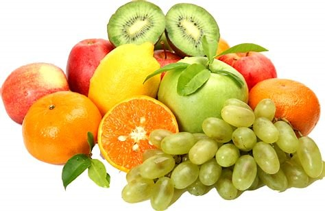
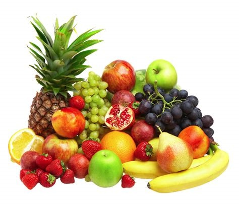

This page explores the benefits of healthy eating and various fruit and vegetable-based diets.Remember, seeking professional advice from a registered dietitian or licensed healthcare
provider, this is crucial before starting any specific diet plan.

Benefits of a Healthy Diet:
Enhanced energy levels:Consuming nutrient-rich foods fuels your body, promoting stamina and reducing fatigue.
Improved physical health: A healthy diet supports a healthy weight, reduces the risk of chronic diseases like
heart disease,type 2 diabetes, and certain cancers.
Boosted immune system: Balanced nutrition strengthens your body's natural defenses, aiding in preventing and
fighting off illnesses.
Promotes healthy skin, hair, and nails: Nutrients from a healthy diet nourish your skin, hair, and nails, contributing
to their overall health and appearance.

Fruit and Vegetable-Based Diets:
Mediterranean diet: This dietary pattern emphasizes fruits, vegetables, whole grains, legumes, olive oil, and fish, with moderate amounts of dairy and poultry.
Dash diet: Designed to lower blood pressure, this diet focuses on fruits, vegetables, whole grains, low-fat dairy products, and limited intake of salt, red meat, and processed foods.
Flexitarian diet: This predominantly plant-based diet allows occasional consumption of meat and animal products in moderation.
The pegan diet: This approach combines elements of the paleo and vegan diets, emphasizing fruits, vegetables, whole grains, nuts, and seeds, with limited intake of animal products and processed foods.